D'après le programme officiel tunisien (Thème 1, Partie IV), ce chapitre vise à :
1 Identifier les organes, cellules et molécules impliqués dans la régulation de la glycémie
2 Expliquer les mécanismes de cette régulation
📚 Situation Problème (p.139-140)
La glycémie (concentration de glucose dans le sang) est une constante biologique : 0,7 à 1,10 g/l (3,88 à 6,10 mmol/l). L'organisme sain dispose de mécanismes régulateurs qui maintiennent cette constance malgré la variation des apports alimentaires et de la consommation cellulaire. Le diabète est une maladie liée à un trouble de la glycémie, très répandu en Tunisie (≈ 10% de la population). Cette maladie inguérissable est due à une hyperglycémie chronique.
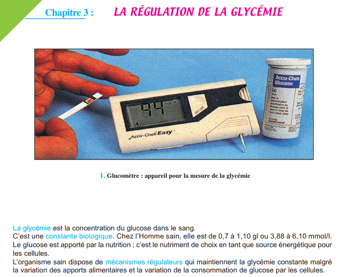
📷 Doc.1 — 1. Glucomètre : appareil pour la mesure de la glycémie (p.139)
'">
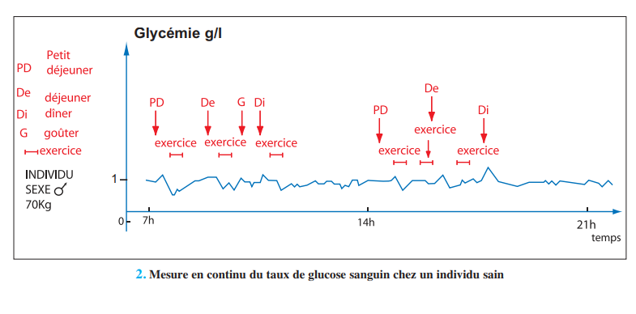
📷 Doc.2 — 2. Mesure en continu du taux de glucose sanguin chez un individu sain (repas, exercice) (p.140)
'">
📚 Préacquis (p.141)
Le glucose provient de la digestion des glucides alimentaires : amidon → maltose → glucose (Ch.3). Il est absorbé au niveau intestinal et transporté par le sang. Il est dégradé par la respiration cellulaire (Ch.4) : C₆H₁₂O₆ + 6 O₂ → 6 CO₂ + 6 H₂O + 36 ATP. Le glucose ne figure normalement pas dans les urines grâce à sa réabsorption rénale totale (Ch.8).
❓ 2 Questions directrices (p.140)
Comment se fait la régulation de la glycémie chez les individus sains ?
Pourquoi chez les diabétiques cette régulation n'est-elle pas efficace ?
🧠 Comprendre avant de mémoriser
La glycémie est régulée principalement par deux hormones pancréatiques antagonistes : l'insuline (hypoglycémiante, sécrétée par les cellules β) et le glucagon (hyperglycémiant, sécrété par les cellules α). Le foie joue un rôle central : en cas d'hyperglycémie, il stocke le glucose sous forme de glycogène (glycogénogenèse) ; en cas d'hypoglycémie, il libère du glucose par glycogénolyse et néoglucogenèse. L'insuline favorise aussi l'entrée du glucose dans les cellules (muscles, tissu adipeux) et la lipogenèse. Le diabète de type I résulte d'un déficit en insuline (destruction des cellules β). Le diabète de type II est dû à une insulinorésistance des cellules cibles.
Clique sur chaque notion · Pièges CAPES et connexions révélés
🫁
Foie
Glycogène·Glycogénolyse
🧬
Pancréas
Cellules α·β·Hormones
⚡
Insuline
Hypoglycémiante·Stockage
⚠️
3 Pièges
Erreurs fréquentes
🔗
Connexions
Ch.2·3·7·8
🫁 Rôle central du foie
Hyperglycémie (après repas) → Stockage glucose en glycogène (glycogénogenèse). Hypoglycémie (jeûne, exercice) → Glycogénolyse (hydrolyse glycogène → glucose libre) + Néoglucogenèse (synthèse glucose à partir d'acides aminés, acides gras).
🧬 Pancréas : dualité structurale et fonctionnelle
Acini = fonction exocrine (suc pancréatique digestif). Îlots de Langerhans = fonction endocrine. Cellules β (centre) → INSULINE (hypoglycémiante). Cellules α (périphérie) → GLUCAGON (hyperglycémiant).
⚡ Mécanisme d'action
Insuline : active glycogénogenèse (foie), captage glucose (muscle, tissu adipeux), lipogenèse. Glucagon : active glycogénolyse (foie), néoglucogenèse, lipolyse. Les deux hormones agissent via des récepteurs membranaires spécifiques sur les cellules cibles.
⚠️ 3 Pièges du CAPES
⚠️ Insuline ≠ hormone qui « brûle » le glucose ▼
L'insuline ne dégrade PAS le glucose. Elle est une hormone de stockage : elle favorise l'entrée du glucose dans les cellules et sa mise en réserve (glycogène, lipides).
⚠️ Diabète type I ≠ Diabète type II ▼
Type I (maigre, jeune) = déficit en insuline (destruction cellules β). Traitement = insuline à vie. Type II (gras, > 40 ans) = insulinorésistance (l'insuline est produite mais inefficace). Traitement = régime, exercice, médicaments.
⚠️ Glucagon n'agit PAS sur le muscle ▼
Le glucagon agit principalement sur le foie (glycogénolyse hépatique). Il n'a pas d'effet sur le glycogène musculaire car les cellules musculaires ne possèdent pas de récepteurs au glucagon. Le muscle utilise son glycogène pour sa propre contraction.
🔗 Connexions
← Ch.2 — Besoins nutritionnels
Les glucides alimentaires sont la source du glucose sanguin (Ch.2).
← Ch.7-8 — Milieu intérieur et rein
La glycémie est une constante (Ch.7). Le glucose est réabsorbé par le rein si < 1,7 g/l (Ch.8).
💭 Réflexion
1. Pourquoi un diabétique de type I maigrit-il malgré une alimentation abondante (polyphagie) ?
Sans insuline, le glucose ne peut pas entrer dans les cellules (muscles, tissu adipeux). Les cellules, privées de glucose, utilisent les lipides et les protéines comme source d'énergie → fonte du tissu adipeux et musculaire → amaigrissement. Le glucose s'accumule dans le sang (hyperglycémie) et est éliminé dans les urines (glucosurie).
📊 Activité 1 — La Glycémie : une constante qui varie (p.142)
Effet de l'alimentation et de l'exercice
Chez l'individu sain, la glycémie fluctue modérément : elle augmente après un repas (hyperglycémie post-prandiale), puis revient à la normale. Elle baisse pendant un exercice physique (consommation de glucose par les muscles). La glycémie reste toujours dans la fourchette 0,7-1,1 g/l.
✏️ Mini-quiz — Activité 1
1. Après un repas riche en glucides, la glycémie .
2. Pendant un exercice physique, la glycémie .
🫁 Activité 2 — Le Foie, Organe Régulateur (p.142-144)
Le foie stocke et libère le glucose
Le foie est un organe clé de la régulation glycémique. Il reçoit le sang de la veine porte (riche en nutriments absorbés par l'intestin) et libère le glucose dans les veines sus-hépatiques.
L'expérience du foie lavé (Claude Bernard, 1850) a démontré le rôle glycogénique du foie : un foie de chien lavé à l'eau tiède pour éliminer tout le glucose, puis laissé à température ambiante 24h, se retrouve à nouveau riche en glucose. Ce glucose provient de l'hydrolyse du glycogène hépatique (glycogénolyse).
🔍 Bilan expérimental : Animal hépatectomisé (sans foie) → hypoglycémie rapide → coma → mort. Le foie est donc indispensable au maintien de la glycémie.
✏️ Mini-quiz — Activité 2
1. En période de jeûne, le foie .
2. Après un repas, le foie .
3. Un animal sans foie meurt d'hypoglycémie car .
💡 À retenir : Le foie agit comme un tampon glycémique : il prélève le glucose en excès après les repas (glycogénogenèse) et le restitue entre les repas ou pendant l'effort (glycogénolyse). La néoglucogenèse (synthèse de glucose à partir d'acides aminés ou de lipides) est activée en cas de jeûne prolongé.
🧬 Activité 3 — Le Pancréas et ses Hormones (p.144-147)
A — Dualité structurale et fonctionnelle
Le pancréas est une glande amphicrine : une fonction exocrine (acini → suc pancréatique digestif) et une fonction endocrine (îlots de Langerhans → hormones). Les îlots contiennent deux types cellulaires : cellules β (centre, 70%) sécrétant l'INSULINE, et cellules α (périphérie, 20%) sécrétant le GLUCAGON.
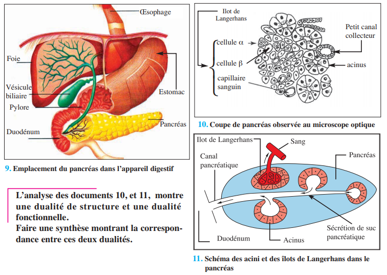
📷 Doc.9 — 11. Schéma des acini et des îlots de Langerhans dans le pancréas (p.145)
'">
B — Effets de l'ablation et de la greffe
L'ablation du pancréas chez le chien provoque un diabète mortel : hyperglycémie à 3,5 g/l, glucosurie, polyurie, polydipsie, polyphagie, amaigrissement. La greffe de pancréas sous la peau rétablit une glycémie normale — preuve que le pancréas produit une substance hypoglycémiante libérée dans le sang.
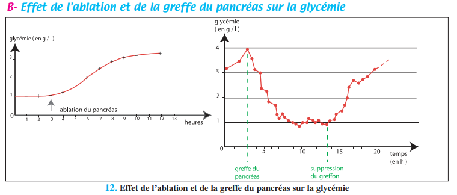
📷 Doc.10 — 12. Effet de l'ablation et de la greffe du pancréas sur la glycémie (p.145)
'">
✏️ Mini-quiz 3A
1. Les cellules β sécrètent .
2. L'ablation du pancréas entraîne .
C — Hormones antagonistes
L'insuline (protéine de 51 acides aminés) est hypoglycémiante : son injection abaisse la glycémie. Le glucagon (protéine de 29 acides aminés) est hyperglycémiant : son injection élève la glycémie. Ces deux hormones sont antagonistes.
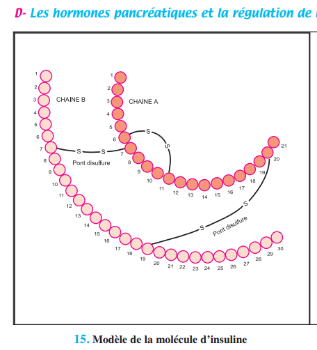
📷 Doc.13 — 15. Modèle de la molécule d'insuline (p.146)
'">
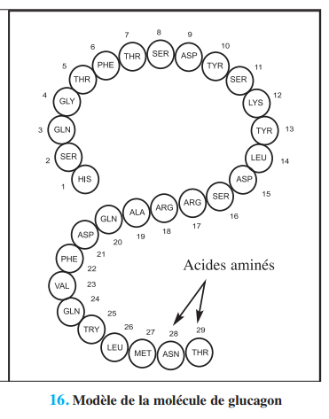
📷 Doc.14 — 16. Modèle de la molécule de glucagon (p.146)
'">
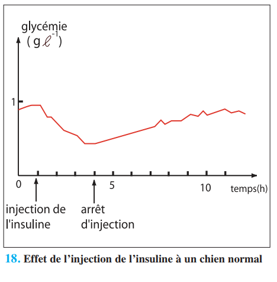
📷 Doc.16 — 18. Effet de l'injection d'insuline à un chien normal (p.147)
'">
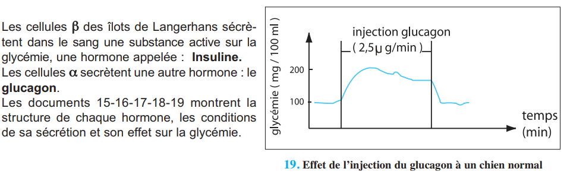
📷 Doc.17 — 19. Effet de l'injection du glucagon à un chien normal (p.147)'">
⚡ Activité 4 — Effets biologiques des Hormones Pancréatiques (p.148)
Cellules cibles et actions métaboliques
Insuline : Elle agit sur le foie (glycogénogenèse), les muscles (captage du glucose, glycogénogenèse) et le tissu adipeux (lipogenèse — stockage des graisses). Elle active l'entrée du glucose dans les cellules via le recrutement de transporteurs GLUT4 à la membrane.
Glucagon : Il agit principalement sur le foie. Il active la glycogénolyse (hydrolyse du glycogène → glucose libre dans le sang) et la néoglucogenèse (synthèse de glucose à partir de composés non glucidiques : acides aminés, acides gras, lactate).
🔍 Souris sans cellules β (alloxane) : Sans insuline → le glucose n'entre pas dans les cellules musculaires → le muscle ne consomme plus de glucose → hyperglycémie. Le glycogène hépatique et musculaire n'est plus synthétisé. La lipogenèse est bloquée → amaigrissement (pas de stockage des graisses).
✏️ Mini-quiz — Activité 4
1. L'insuline favorise .
2. Le glucagon active .
3. Sans insuline, le muscle .
💡 À retenir : L'insuline est l'hormone de l'abondance (stockage post-prandial). Le glucagon est l'hormone du jeûne (mobilisation des réserves). Le rapport insuline/glucagon détermine l'orientation du métabolisme : stockage (ratio élevé) ou mobilisation (ratio faible).
🩺 Activité 5 — Le Diabète (p.148-152)
Types, symptômes et mécanismes
Le diabète se caractérise par les 4 symptômes cardinaux : polyurie (urines abondantes), polydipsie (soif intense), polyphagie (faim excessive) et amaigrissement. La glucosurie (glucose dans les urines) est le signe biologique caractéristique.
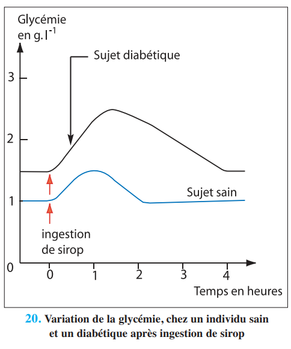
📷 Doc.18 — 20. Variation de la glycémie chez un sujet sain et un diabétique après ingestion de sirop (p.149)
'">
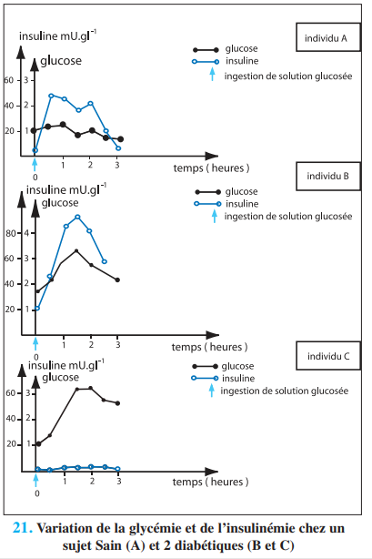
📷 Doc.19 — 21. Variation de la glycémie et de l'insulinémie chez un sujet sain (A) et 2 diabétiques (B et C) (p.149)
'">
Caractéristique
Diabète Type I (maigre)
Diabète Type II (gras)
Âge
Enfants, jeunes adultes
> 40 ans
Poids
Normal ou maigre
Obèse ou surpoids
Cause
Destruction des cellules β → déficit en insuline
Insulinorésistance des cellules cibles
Insulinémie
Effondrée (pas d'insuline)
Normale ou élevée (inefficace)
Traitement
Insuline à vie (DID)
Régime, exercice, médicaments (DNID)
🔍 Insulinorésistance : Dans le diabète de type II, les cellules cibles possèdent moins de récepteurs à l'insuline ou des récepteurs défectueux. L'insuline est produite mais ne peut pas agir → le glucose reste dans le sang. L'obésité et la sédentarité sont les principaux facteurs de risque.
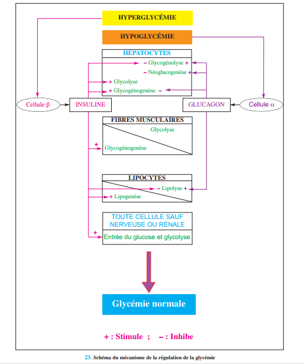
📷 Doc.21 — 23. Schéma du mécanisme de la régulation de la glycémie (p.151)'">
✏️ Mini-quiz — Activité 5
1. Le diabète de type I est dû à .
2. Le diabète de type II est lié à .
3. La glucosurie apparaît quand la glycémie dépasse .
💡 À retenir : Le diabète de type II représente ≈ 80% des cas. Il est favorisé par l'obésité, la sédentarité et l'hérédité. Sa prévention repose sur une alimentation équilibrée, une activité physique régulière et un contrôle régulier de la glycémie. Le diabète de type I nécessite un traitement à vie par injections d'insuline.